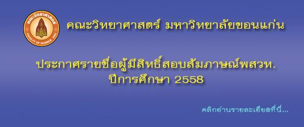

Toggle navigation
นักศึกษา
นักเรียน
ศิษย์เก่า
บุคลากร
Toggle navigation
SCIENCE
KHON KAEN UNIVERSITY
หน้าแรก
เกี่ยวกับคณะวิทยาศาสตร์
แนะนำคณะ
คณะผู้บริหาร
หน่วยงานของคณะ
บริการของคณะ
ภาควิชา/ศูนย์
ติดต่อเรา

ข่าวอบรมสัมนาวิชาการ
คณะวิทยาศาสตร์ มข จัดสัมมนา ขับเคลื่อนแผนปฎิบัติราชการคณะวิทยาศาสตร์ ประจำปีงบประมาณ 2558
พิธีปิดค่ายโอลิมปิกวิชาการและค่ายฟิสิกส์ดาราศาสตร์โอลิมปิก ค่ายที่ 1 ประจำปี 2557
คณะวิทยาศาสตร์ จัดการสัมมนาในหัวข้อ "สหกิจศึกษาคืออะไร จะได้อะไรถ้าไปสหกิจศึกษา"
ดูทั้งหมด
ข่าววิจัย
รายการ "ตื่นข่าว"แจ้งเลื่อนออกอากาศสารคดี "แมงป่องช้าง" ไปเป็นวันที่ 9 พ.ย. เวลา 17.00 น.
ไทยรัฐทีวี บุกถ่ายสารคดี "แมงป่องช้าง" ที่คณะวิทย์ฯ ออกรายการ "ตื่นข่าว"
นักศึกษา ป.เอก จุลชีววิทยา คว้ารางวัล The Best Paper Award ในงานประชุมวิชาการนานาชาติ ที่เกาหลีใต้
ดูทั้งหมด
ข่าวบุคลากร
ผศ.ดร.สมเกียรติ ศรีจารนัย และ รศ.ดร.ศุภลักษณ์ ศรีจารนัย ร่วมบริจาคเงินสมทบทุนกองทุน 50 ปี คณะวิทยาศาสตร์
คณบดีคณะวิทยาศาสตร์ รับมอบต้นกล้าจำปาจาก รศ.ดร.นวรัตน์ อุดมประเสริฐ ศิษย์เก่าชีววิทยา
คณะวิทยาศาสตร์ มข ขอแสดงความยินดีกับนายปิยนัฐ ดวงจำปา เนื่องในโอกาสได้บุตรสาว
ดูทั้งหมด
ข่าวนักศึกษา
นักศึกษาคณะวิทยาศาสตร์ มข คว้ารางวัลชนะเลิศ โครงงานค้นคว้าอิสระสาขาฟิสิกส์ ครั้งที่ 7 (SPC2014)
นักศึกษาคณะวิทยาศาสตร์ มข รับมอบทุนการศึกษาไทยบริดจสโตน ประจำปี 2557
พิธีถวายสัตย์ปฏิญาณนักศึกษาใหม่ ประจำปี 2557
ดูทั้งหมด
ข่าวนักเรียน
คณะวิทยาศาสตร์ มข แนะแนวการศึกษา ให้กับน้องๆโรงเรียนมหาไถ่ศึกษาภาคตะวันออกเฉียงเหนือ
คณะวิทยาศาสตร์ให้การต้อนรับ คณะนักเรียน จากสถาบันกวดวิชา Alistotle
นร.ศูนย์ สอวน. มข. คว้าเหรียญจากการแข่งคอมโอลิมปิกระดับชาติ ครั้งที่ 10
ดูทั้งหมด
ข่าวประชาสัมพันธ์/ข่าวทั่วไป
คณะวิทยาศาสตร์ มข. ร่วมแสดงความยินดีกับ รศ.ดร.ลำปาง แม่นมาตย์ เนื่องในโอกาสเข้ารับตำแหน่งใหม่
คณะวิทยาศาสตร์ มข. คว้ารางวัลชนะเลิศการประกวดขบวนแห่และกระทง ในงานประเพณีลอยกระทง มข ประจำปี 2557
คณะวิทยาศาสตร์ รับการประเมินคุณภาพภายในตามเกณฑ์ (EdPEx) ประจำปี2556
ดูทั้งหมด
ข่าววิทยาศาสตร์-เทคโนโลยี
สกว.ชู 16 วิจัยเด่นมีคุณค่าแก่ประเทศ
สกว.จัดพิธีมอบโล่เกียรติยศแก่นักวิจัยผู้มีผลงานยอดเยี่ยมรวม 16 รางวัล หมอจรัสชี้เป็นหัวใจการพัฒนาไทยมองข้าม
ใช้ลายมือไก่เขี่ยเป็นพาสเวิร์ดในอนาคต
ดูทั้งหมด